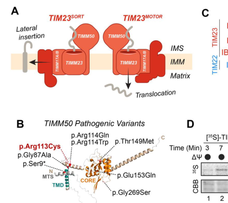

3-methylglutaconic aciduria type 9 (MGCA9) is a rare autosomal recessive mitochondrial encephalopathy caused by biallelic pathogenic variants in TIMM50, a core subunit of the TIM23 presequence translocase of the inner mitochondrial membrane. Onset is in infancy, typically with epileptic encephalopathy (often infantile spasms with hypsarrhythmia), severe global developmental delay and intellectual disability, hypotonia, and later optic atrophy. Some patients have microcephaly, spastic quadriplegia, cerebral white matter loss, Leigh syndrome, cardiomyopathy, or neutropenia. Biochemically, 3-methylglutaconic aciduria is usual but not invariable, plasma or CSF lactate may be mildly raised, and respiratory chain studies show complex V or combined oxidative phosphorylation deficiency. Patient cells have reduced TIMM50 and TIM23 core protein, lower mitochondrial membrane potential, impaired presequence import, abnormal cristae and reduced respiration. Treatment is supportive and centred on seizure control.
Ask a research question about 3-Methylglutaconic Aciduria Type 9. OpenScientist will conduct autonomous deep research using the Disorder Mechanisms Knowledge Base and PubMed literature (typically 10-30 minutes).
Do not include personal health information in your question. Questions and results are cached in your browser's local storage.
name: 3-Methylglutaconic Aciduria Type 9
creation_date: '2026-10-08T00:00:00Z'
category: Mendelian
description: >-
3-methylglutaconic aciduria type 9 (MGCA9) is a rare autosomal recessive
mitochondrial encephalopathy caused by biallelic pathogenic variants in
TIMM50, a core subunit of the TIM23 presequence translocase of the inner
mitochondrial membrane. Onset is in infancy, typically with epileptic
encephalopathy (often infantile spasms with hypsarrhythmia), severe global
developmental delay and intellectual disability, hypotonia, and later optic
atrophy. Some patients have microcephaly, spastic quadriplegia, cerebral white
matter loss, Leigh syndrome, cardiomyopathy, or neutropenia. Biochemically,
3-methylglutaconic aciduria is usual but not invariable, plasma or CSF lactate
may be mildly raised, and respiratory chain studies show complex V or
combined oxidative phosphorylation deficiency. Patient cells have reduced
TIMM50 and TIM23 core protein, lower mitochondrial membrane potential,
impaired presequence import, abnormal cristae and reduced respiration.
Treatment is supportive and centred on seizure control.
disease_term:
preferred_term: 3-methylglutaconic aciduria type 9
term:
id: MONDO:0044724
label: 3-methylglutaconic aciduria type 9
synonyms:
- MGCA9
- 3-methylglutaconic aciduria type IX
- TIMM50-related mitochondrial disease
parents:
- 3-Methylglutaconic Aciduria
- Mitochondrial Encephalopathy
notes: >-
No GeneReviews chapter, ClinGen gene-disease validity record or cached
Orphanet record names this disorder or TIMM50. The disease is defined by a
small number of families (Bedouin, Arab, Italian, Spanish, Iranian and
Australian probands), so frequency bands are omitted for most phenotypes.
Reported but not captured here because no cached text supports them: one
patient's dilated cardiomyopathy improved with digoxin, and his course to
age 17 included dystonia and wheelchair dependence (Tort 2019 full text).
inheritance:
- name: Autosomal recessive
inheritance_term:
preferred_term: Autosomal recessive inheritance
term:
id: HP:0000007
label: Autosomal recessive inheritance
description: >-
Affected individuals carry homozygous or compound heterozygous TIMM50
variants, with heterozygous unaffected parents.
evidence:
- reference: PMID:38828998
reference_title: Reduced Protein Import via TIM23 SORT Drives Disease Pathology in TIMM50-Associated Mitochondrial Disease.
supports: SUPPORT
evidence_source: HUMAN_CLINICAL
quote_role: BACKGROUND
snippet: MGCA9 is an early onset autosomal recessive disorder that is characterized by seizures, intellectual disability, and developmental delay
explanation: States the autosomal recessive mode of inheritance across reported TIMM50 cases.
- reference: PMID:30190335
reference_title: Mutations in TIMM50 compromise cell survival in OxPhos-dependent metabolic conditions.
supports: SUPPORT
evidence_source: HUMAN_CLINICAL
snippet: Sanger sequencing confirmed the two variants in the proband and showed that the two parents were each heterozygous for one of them
explanation: Compound heterozygous proband with one heterozygous carrier parent per allele.
genetic:
- name: TIMM50
gene_term:
preferred_term: TIMM50
term:
id: hgnc:23656
label: TIMM50
relationship_type: CAUSATIVE
variant_origin: GERMLINE
notes: >-
Reported alleles are mostly missense (including p.Arg217Trp, p.Thr252Met,
p.Gly372Ser and p.Arg113Cys) and act as loss of function by reducing
steady-state TIMM50 protein. No ClinGen gene-disease validity
classification exists for this pair.
evidence:
- reference: PMID:27573165
reference_title: Mitochondrial epileptic encephalopathy, 3-methylglutaconic aciduria and variable complex V deficiency associated with TIMM50 mutations.
supports: SUPPORT
evidence_source: HUMAN_CLINICAL
snippet: Using exome analysis we identified two homozygous missense mutations, Arg217Trp and Thr252Met, in the TIMM50 gene.
explanation: Gene-discovery report of homozygous TIMM50 variants in two unrelated families.
- reference: PMID:27573165
reference_title: Mitochondrial epileptic encephalopathy, 3-methylglutaconic aciduria and variable complex V deficiency associated with TIMM50 mutations.
supports: SUPPORT
evidence_source: HUMAN_CLINICAL
snippet: The mutations, which affected evolutionary conserved residues and segregated with the disease in the families, were neither present in large cohorts of control exome analyses nor in our ethnic specific exome cohort.
explanation: Segregation and absence from controls support causality.
- reference: PMID:31058414
reference_title: Mutations in TIMM50 cause severe mitochondrial dysfunction by targeting key aspects of mitochondrial physiology.
supports: SUPPORT
evidence_source: HUMAN_CLINICAL
snippet: Whole-exome sequencing identified compound heterozygous mutations in TIMM50
explanation: Independent family with biallelic TIMM50 variants.
- reference: PMID:35019165
reference_title: Novel variants underlying autosomal recessive neurodevelopmental disorders with intellectual disability in Iranian consanguineous families.
supports: SUPPORT
evidence_source: HUMAN_CLINICAL
snippet: two novel homozygous missense variants in FBXO31 and TIMM50 genes
explanation: Additional homozygous TIMM50 missense variant in an Iranian consanguineous family with intellectual disability.
pathophysiology:
- name: Reduced TIMM50 and TIM23 Core Protein
description: >-
Biallelic TIMM50 variants lower the steady-state level of TIMM50 protein
despite normal mRNA, and secondarily reduce the other TIM23 core subunits.
biological_scale: MOLECULAR
genes:
- preferred_term: TIMM50
term:
id: hgnc:23656
label: TIMM50
modifier: DECREASED
molecular_functions:
- preferred_term: TIM23 presequence receptor and translocase activity
term:
id: GO:0008320
label: transmembrane protein transporter activity
modifier: DECREASED
cellular_components:
- preferred_term: TIM23 complex
term:
id: GO:0005744
label: TIM23 mitochondrial import inner membrane translocase complex
genetic_context:
description: Germline biallelic (homozygous or compound heterozygous) TIMM50 variants, mostly missense.
variant_origin: GERMLINE
functional_impact_category: LOSS_OF_FUNCTION
evidence:
- reference: PMID:31058414
reference_title: Mutations in TIMM50 cause severe mitochondrial dysfunction by targeting key aspects of mitochondrial physiology.
supports: SUPPORT
evidence_source: IN_VITRO
snippet: TIMM50 protein was severely reduced in the patient fibroblasts, regardless of the normal mRNA levels, suggesting that the mutated residues might be important for TIMM50 protein stability.
explanation: Patient fibroblasts show loss of TIMM50 protein with preserved transcript.
- reference: PMID:39680434
reference_title: Biochemical and neurophysiological effects of deficiency of the mitochondrial import protein TIMM50.
supports: SUPPORT
evidence_source: IN_VITRO
snippet: we characterized a TIMM50 disease-causing mutation in human fibroblasts and noted significant decreases in TIM23 core protein levels (TIMM50, TIMM17A/B, and TIMM23)
explanation: Reduced TIMM50 destabilizes the TIM23 core.
- reference: PMID:27573165
reference_title: Mitochondrial epileptic encephalopathy, 3-methylglutaconic aciduria and variable complex V deficiency associated with TIMM50 mutations.
supports: SUPPORT
evidence_source: HUMAN_CLINICAL
quote_role: BACKGROUND
snippet: It serves as the major receptor in the intermembrane space, binding to proteins which cross the mitochondrial inner membrane on their way to the matrix.
explanation: Describes the normal TIMM50 receptor activity within the TIM23 translocase that the variants compromise.
downstream:
- target: Impaired TIM23-Dependent Mitochondrial Protein Import
causal_link_type: DIRECT
evidence:
- reference: PMID:30190335
reference_title: Mutations in TIMM50 compromise cell survival in OxPhos-dependent metabolic conditions.
supports: SUPPORT
evidence_source: IN_VITRO
snippet: Patient fibroblasts presented low levels of TIMM50 and other components of the TIM23 complex, lower mitochondrial membrane potential, and impaired TIM23-dependent protein import.
explanation: Links reduced TIM23 components to impaired presequence import in patient cells.
- target: Neuronal Hyperexcitability
causal_link_type: INDIRECT_UNKNOWN_INTERMEDIATES
- name: Impaired TIM23-Dependent Mitochondrial Protein Import
description: >-
Reduced TIM23 levels and activity impair import of presequence-containing
precursors. Proteomics indicates that laterally inserted inner-membrane
substrates of the TIM23-SORT pathway, enriched for OXPHOS and cristae
proteins, are most sensitive, whereas most matrix substrates are maintained.
biological_scale: MOLECULAR
biological_processes:
- preferred_term: protein import into mitochondrial matrix
term:
id: GO:0030150
label: protein import into mitochondrial matrix
modifier: DECREASED
- preferred_term: protein insertion into mitochondrial inner membrane
term:
id: GO:0045039
label: protein insertion into mitochondrial inner membrane
modifier: DECREASED
evidence:
- reference: PMID:38828998
reference_title: Reduced Protein Import via TIM23 SORT Drives Disease Pathology in TIMM50-Associated Mitochondrial Disease.
supports: SUPPORT
evidence_source: IN_VITRO
snippet: Using proteomic data sets from TIMM50 patient fibroblasts and a TIMM50 HEK293 cell model of disease, we reveal that laterally released substrates imported via the TIM23SORT complex pathway are most sensitive to loss of TIMM50.
explanation: Identifies the substrate class most affected by TIMM50 loss.
- reference: PMID:39680434
reference_title: Biochemical and neurophysiological effects of deficiency of the mitochondrial import protein TIMM50.
supports: SUPPORT
evidence_source: IN_VITRO
snippet: TIMM50 deficiency had no impact on the steady-state levels of most of its putative substrates, suggesting that even low levels of a functional TIM23 complex are sufficient to maintain the majority of TIM23 complex-dependent mitochondrial proteome.
explanation: Shows the import defect is selective rather than global.
downstream:
- target: Combined Oxidative Phosphorylation Deficiency
causal_link_type: DIRECT
evidence:
- reference: PMID:38828998
reference_title: Reduced Protein Import via TIM23 SORT Drives Disease Pathology in TIMM50-Associated Mitochondrial Disease.
supports: SUPPORT
evidence_source: IN_VITRO
snippet: Proteins involved in OXPHOS and mitochondrial ultrastructure are enriched in the TIM23SORT substrate pool, providing a biochemical mechanism for the specific defects in TIMM50-associated mitochondrial disease patients.
explanation: Explains how the selective import defect produces the OXPHOS defect.
- target: Abnormal Mitochondrial Cristae Organization
causal_link_type: DIRECT
evidence:
- reference: PMID:38828998
reference_title: Reduced Protein Import via TIM23 SORT Drives Disease Pathology in TIMM50-Associated Mitochondrial Disease.
supports: SUPPORT
evidence_source: IN_VITRO
snippet: We demonstrate that TIMM50 pathogenic variants reduce the levels and activity of endogenous TIM23 complex, which significantly impacts the mitochondrial proteome, resulting in a combined oxidative phosphorylation (OXPHOS) defect and changes to mitochondrial ultrastructure.
explanation: Reduced TIM23 activity is followed by ultrastructural change.
- target: 3-Methylglutaconic aciduria
causal_link_type: INDIRECT_UNKNOWN_INTERMEDIATES
evidence:
- reference: PMID:27573165
reference_title: Mitochondrial epileptic encephalopathy, 3-methylglutaconic aciduria and variable complex V deficiency associated with TIMM50 mutations.
supports: SUPPORT
directness: INDIRECT
evidence_source: HUMAN_CLINICAL
snippet: 3-methylglutaconic aciduria is emerging as an important biomarker for mitochondrial dysfunction, in particular for mitochondrial membrane defects.
explanation: Places 3-MGA as a marker of inner-membrane defects; the biochemical route from TIMM50 loss to 3-MGA is not established.
- name: Combined Oxidative Phosphorylation Deficiency
description: >-
Steady-state levels of respiratory chain subunits, assembled OXPHOS
complexes and supercomplexes fall, reducing maximal respiration and
membrane potential and increasing ROS. Complex V deficiency was the first
reported finding; later patients showed deficiencies of several complexes.
biological_scale: CELLULAR
cell_types:
- preferred_term: fibroblast
term:
id: CL:0000057
label: fibroblast
biological_processes:
- preferred_term: oxidative phosphorylation
term:
id: GO:0006119
label: oxidative phosphorylation
modifier: DECREASED
- preferred_term: regulation of mitochondrial membrane potential
term:
id: GO:0051881
label: regulation of mitochondrial membrane potential
modifier: DECREASED
- preferred_term: reactive oxygen species metabolic process
term:
id: GO:0072593
label: reactive oxygen species metabolic process
modifier: INCREASED
evidence:
- reference: PMID:30190335
reference_title: Mutations in TIMM50 compromise cell survival in OxPhos-dependent metabolic conditions.
supports: SUPPORT
evidence_source: IN_VITRO
snippet: steady-state levels of several components of mitochondrial respiratory chain were decreased, resulting in decreased respiration and increased ROS production
explanation: Patient fibroblasts show reduced respiratory chain components and respiration.
- reference: PMID:31058414
reference_title: Mutations in TIMM50 cause severe mitochondrial dysfunction by targeting key aspects of mitochondrial physiology.
supports: SUPPORT
evidence_source: IN_VITRO
snippet: The levels of fully assembled OXPHOS complexes and supercomplexes were strongly reduced in fibroblasts from this patient.
explanation: Combined assembly defect of OXPHOS complexes.
- reference: PMID:31058414
reference_title: Mutations in TIMM50 cause severe mitochondrial dysfunction by targeting key aspects of mitochondrial physiology.
supports: SUPPORT
evidence_source: IN_VITRO
snippet: A TIMM50-deficient HEK293T cell line that we generated using CRISPR/Cas9 mimicked the respiratory defect observed in the patient fibroblasts; notably, this defect was rescued by transfection with a plasmid encoding the TIMM50 wild-type protein.
explanation: Rescue experiment ties the respiratory defect to TIMM50.
downstream:
- target: Neuronal Bioenergetic Failure
causal_link_type: DIRECT
evidence:
- reference: PMID:39680434
reference_title: Biochemical and neurophysiological effects of deficiency of the mitochondrial import protein TIMM50.
supports: SUPPORT
evidence_source: MODEL_ORGANISM
snippet: This led to declined respiration rates in fibroblasts and neurons, reduced cellular ATP levels, and defective mitochondrial trafficking in neuronal processes
explanation: Reduced OXPHOS components lower respiration and ATP in TIMM50-deficient mouse neurons.
- target: Mitochondrial ATP synthase deficiency
- target: Elevated lactate
- name: Abnormal Mitochondrial Cristae Organization
description: >-
Muscle and fibroblasts show abnormal mitochondrial morphology with
aberrant cristae organization.
biological_scale: CELLULAR
biological_processes:
- preferred_term: cristae formation
term:
id: GO:0042407
label: cristae formation
modifier: DECREASED
evidence:
- reference: PMID:31058414
reference_title: Mutations in TIMM50 cause severe mitochondrial dysfunction by targeting key aspects of mitochondrial physiology.
supports: SUPPORT
evidence_source: HUMAN_CLINICAL
snippet: Severe morphological defects and ultrastructural abnormalities with aberrant mitochondrial cristae organization in muscle and fibroblasts were found.
explanation: Ultrastructural cristae defect in patient muscle and fibroblasts.
- name: Neuronal Bioenergetic Failure
description: >-
TIMM50 knockdown in mouse neurons lowers respiration and ATP and impairs
mitochondrial trafficking in neuronal processes, a proposed contributor to
the developmental defects of patients.
biological_scale: CELLULAR
cell_types:
- preferred_term: neuron
term:
id: CL:0000540
label: neuron
biological_processes:
- preferred_term: mitochondrion transport along microtubule
term:
id: GO:0047497
label: mitochondrion transport along microtubule
modifier: DECREASED
- preferred_term: ATP biosynthetic process
term:
id: GO:0006754
label: ATP biosynthetic process
modifier: DECREASED
evidence:
- reference: PMID:39680434
reference_title: Biochemical and neurophysiological effects of deficiency of the mitochondrial import protein TIMM50.
supports: SUPPORT
evidence_source: MODEL_ORGANISM
snippet: This led to declined respiration rates in fibroblasts and neurons, reduced cellular ATP levels, and defective mitochondrial trafficking in neuronal processes, possibly contributing to the developmental defects observed in patients with TIMM50 disease.
explanation: Mouse neuron knockdown model of TIMM50 deficiency.
downstream:
- target: Global developmental delay
causal_link_type: INDIRECT_UNKNOWN_INTERMEDIATES
evidence:
- reference: PMID:39680434
reference_title: Biochemical and neurophysiological effects of deficiency of the mitochondrial import protein TIMM50.
supports: SUPPORT
directness: INDIRECT
evidence_source: MODEL_ORGANISM
snippet: The consequently reduced cellular ATP levels and the detected mitochondrial abnormalities in neurons provide a plausible link between the TIMM50 mutation and the observed developmental defects in the patients.
explanation: Authors propose, without demonstrating in patients, that neuronal energy failure underlies developmental delay.
- target: Severe intellectual disability
causal_link_type: INDIRECT_UNKNOWN_INTERMEDIATES
- name: Neuronal Hyperexcitability
description: >-
TIMM50-deficient mouse neurons fire action potentials at an increased
rate, together with reduced plasma-membrane KCNJ10 and KCNA2 potassium
channels; this is proposed to underlie the epilepsy of patients.
biological_scale: CELLULAR
cell_types:
- preferred_term: neuron
term:
id: CL:0000540
label: neuron
biological_processes:
- preferred_term: neuronal action potential
term:
id: GO:0019228
label: neuronal action potential
modifier: INCREASED
genes:
- preferred_term: KCNJ10
term:
id: hgnc:6256
label: KCNJ10
modifier: DECREASED
- preferred_term: KCNA2
term:
id: hgnc:6220
label: KCNA2
modifier: DECREASED
evidence:
- reference: PMID:39680434
reference_title: Biochemical and neurophysiological effects of deficiency of the mitochondrial import protein TIMM50.
supports: SUPPORT
evidence_source: MODEL_ORGANISM
snippet: increased electrical activity was observed in TIMM50 deficient mice neuronal cells, which correlated with reduced levels of KCNJ10 and KCNA2 plasma membrane potassium channels, likely underlying the patients' epileptic phenotype
explanation: Mouse neuronal model links TIMM50 loss to hyperexcitability.
downstream:
- target: Epileptic encephalopathy
causal_link_type: INDIRECT_UNKNOWN_INTERMEDIATES
evidence:
- reference: PMID:39680434
reference_title: Biochemical and neurophysiological effects of deficiency of the mitochondrial import protein TIMM50.
supports: SUPPORT
directness: INDIRECT
evidence_source: MODEL_ORGANISM
snippet: Additionally, the detected increase in action potential firing rate in TIMM50-deficient neurons can explain the presence of epileptic seizures, a hallmark of all TIMM50 patients studied thus far.
explanation: Mechanistic proposal from a mouse neuron model, not tested in patients.
- target: Infantile spasms
causal_link_type: INDIRECT_UNKNOWN_INTERMEDIATES
phenotypes:
- name: Epileptic encephalopathy
category: Neurological
description: Early-onset, often intractable epilepsy is a hallmark of all reported patients.
frequency: VERY_FREQUENT
phenotype_term:
preferred_term: Epileptic encephalopathy
term:
id: HP:0200134
label: Epileptic encephalopathy
evidence:
- reference: PMID:27573165
reference_title: Mitochondrial epileptic encephalopathy, 3-methylglutaconic aciduria and variable complex V deficiency associated with TIMM50 mutations.
supports: SUPPORT
evidence_source: HUMAN_CLINICAL
snippet: We now report on four patients from two unrelated families who presented with severe intellectual disability and seizure disorder
explanation: Seizure disorder in all four index patients.
- reference: PMID:30190335
reference_title: Mutations in TIMM50 compromise cell survival in OxPhos-dependent metabolic conditions.
supports: SUPPORT
evidence_source: HUMAN_CLINICAL
snippet: affected by severe epilepsy and lactic acidosis
explanation: Third family with severe epilepsy.
- name: Infantile spasms
category: Neurological
description: Infantile spasms (West syndrome), with hypsarrhythmia on EEG, are a frequent presenting seizure type.
phenotype_term:
preferred_term: Infantile spasms
term:
id: HP:0012469
label: Infantile spasms
evidence:
- reference: PMID:27573165
reference_title: Mitochondrial epileptic encephalopathy, 3-methylglutaconic aciduria and variable complex V deficiency associated with TIMM50 mutations.
supports: SUPPORT
evidence_source: HUMAN_CLINICAL
snippet: who presented with infantile spasms, severe developmental delay, and severe hypotonia
explanation: Case description of an index patient.
- reference: PMID:31058414
reference_title: Mutations in TIMM50 cause severe mitochondrial dysfunction by targeting key aspects of mitochondrial physiology.
supports: SUPPORT
evidence_source: HUMAN_CLINICAL
snippet: in a boy with West syndrome, optic atrophy, neutropenia, cardiomyopathy, Leigh syndrome, and persistent 3-MGA-uria
explanation: West syndrome in an independent patient.
- reference: PMID:38828998
reference_title: Reduced Protein Import via TIM23 SORT Drives Disease Pathology in TIMM50-Associated Mitochondrial Disease.
supports: SUPPORT
evidence_source: HUMAN_CLINICAL
snippet: presented with global developmental delay, optic nerve atrophy, generalized white matter loss and infantile spasms
explanation: Infantile spasms in a further homozygous patient.
- name: Hypsarrhythmia
category: Neurological
phenotype_term:
preferred_term: Hypsarrhythmia
term:
id: HP:0002521
label: Hypsarrhythmia
evidence:
- reference: PMID:27573165
reference_title: Mitochondrial epileptic encephalopathy, 3-methylglutaconic aciduria and variable complex V deficiency associated with TIMM50 mutations.
supports: SUPPORT
evidence_source: HUMAN_CLINICAL
snippet: she presented at 4 months with abnormal movements and hypsarrhythmia by EEG
explanation: EEG finding in an index patient.
- name: Severe intellectual disability
category: Neurological
frequency: VERY_FREQUENT
phenotype_term:
preferred_term: Severe intellectual disability
term:
id: HP:0010864
label: Severe intellectual disability
evidence:
- reference: PMID:27573165
reference_title: Mitochondrial epileptic encephalopathy, 3-methylglutaconic aciduria and variable complex V deficiency associated with TIMM50 mutations.
supports: SUPPORT
evidence_source: HUMAN_CLINICAL
snippet: missense mutations in TIMM50 are likely manifesting by severe intellectual disability and epilepsy accompanied by 3-methylglutaconic aciduria and variable mitochondrial complex V deficiency
explanation: Severe intellectual disability is a core feature.
- name: Global developmental delay
category: Neurological
phenotype_term:
preferred_term: Global developmental delay
term:
id: HP:0001263
label: Global developmental delay
evidence:
- reference: PMID:38828998
reference_title: Reduced Protein Import via TIM23 SORT Drives Disease Pathology in TIMM50-Associated Mitochondrial Disease.
supports: SUPPORT
evidence_source: HUMAN_CLINICAL
snippet: The onset and nature of the clinical presentation were consistent with other reported pathogenic variants in TIMM50 causing MGCA9, including global developmental delay, optic nerve atrophy, generalized white matter loss and infantile spasms
explanation: Global developmental delay in the reported patient and earlier cases.
- name: Generalized hypotonia
category: Neurological
phenotype_term:
preferred_term: Generalized hypotonia
term:
id: HP:0001290
label: Generalized hypotonia
evidence:
- reference: PMID:27573165
reference_title: Mitochondrial epileptic encephalopathy, 3-methylglutaconic aciduria and variable complex V deficiency associated with TIMM50 mutations.
supports: SUPPORT
evidence_source: HUMAN_CLINICAL
snippet: Early stages of development were reportedly normal but at 3 months of age generalized hypotonia and involuntary abnormal movements were noted.
explanation: Infantile-onset generalized hypotonia.
- name: Optic atrophy
category: Ophthalmological
description: Optic atrophy develops in childhood in several patients.
phenotype_term:
preferred_term: Optic atrophy
term:
id: HP:0000648
label: Optic atrophy
evidence:
- reference: PMID:27573165
reference_title: Mitochondrial epileptic encephalopathy, 3-methylglutaconic aciduria and variable complex V deficiency associated with TIMM50 mutations.
supports: SUPPORT
evidence_source: HUMAN_CLINICAL
snippet: Repeated examination at 7 years revealed bilateral optic atrophy.
explanation: Later-developing optic atrophy in an index patient.
- reference: PMID:31058414
reference_title: Mutations in TIMM50 cause severe mitochondrial dysfunction by targeting key aspects of mitochondrial physiology.
supports: SUPPORT
evidence_source: HUMAN_CLINICAL
snippet: in a boy with West syndrome, optic atrophy, neutropenia, cardiomyopathy, Leigh syndrome, and persistent 3-MGA-uria
explanation: Optic atrophy in an independent patient.
- name: Microcephaly
category: Neurological
phenotype_term:
preferred_term: Microcephaly
term:
id: HP:0000252
label: Microcephaly
evidence:
- reference: PMID:27573165
reference_title: Mitochondrial epileptic encephalopathy, 3-methylglutaconic aciduria and variable complex V deficiency associated with TIMM50 mutations.
supports: SUPPORT
evidence_source: HUMAN_CLINICAL
quote_role: BACKGROUND
snippet: a homozygous mutation, Gly372Ser, in the TIMM50 gene, was recently reported in three sibs who suffered from intractable epilepsy, microcephaly, developmental delay, visual deficit and spastic quadriplegia accompanied by 3MGA
explanation: Cites the earlier Gly372Ser sibship with microcephaly.
- name: Spastic tetraplegia
category: Neurological
phenotype_term:
preferred_term: Spastic tetraplegia
term:
id: HP:0002510
label: Spastic tetraplegia
evidence:
- reference: PMID:27573165
reference_title: Mitochondrial epileptic encephalopathy, 3-methylglutaconic aciduria and variable complex V deficiency associated with TIMM50 mutations.
supports: SUPPORT
evidence_source: HUMAN_CLINICAL
quote_role: BACKGROUND
snippet: a homozygous mutation, Gly372Ser, in the TIMM50 gene, was recently reported in three sibs who suffered from intractable epilepsy, microcephaly, developmental delay, visual deficit and spastic quadriplegia accompanied by 3MGA
explanation: Spastic quadriplegia in the Gly372Ser sibship.
- name: Cerebral white matter atrophy
category: Neurological
phenotype_term:
preferred_term: Cerebral white matter atrophy
term:
id: HP:0012762
label: Cerebral white matter atrophy
evidence:
- reference: PMID:38828998
reference_title: Reduced Protein Import via TIM23 SORT Drives Disease Pathology in TIMM50-Associated Mitochondrial Disease.
supports: SUPPORT
evidence_source: HUMAN_CLINICAL
snippet: presented with global developmental delay, optic nerve atrophy, generalized white matter loss and infantile spasms
explanation: Generalized white matter loss on neuroimaging.
- name: 3-Methylglutaconic aciduria
category: Laboratory
description: >-
Urinary 3-methylglutaconic acid is elevated in most patients and gives the
disorder its name, but it was absent in at least one molecularly confirmed
patient.
phenotype_term:
preferred_term: 3-Methylglutaconic aciduria
term:
id: HP:0003535
label: 3-Methylglutaconic aciduria
evidence:
- reference: PMID:27573165
reference_title: Mitochondrial epileptic encephalopathy, 3-methylglutaconic aciduria and variable complex V deficiency associated with TIMM50 mutations.
supports: SUPPORT
evidence_source: HUMAN_CLINICAL
snippet: accompanied by slightly elevated lactate level, 3-methylglutaconic aciduria and variable deficiency of mitochondrial complex V
explanation: 3-MGA in the index families.
- reference: PMID:31058414
reference_title: Mutations in TIMM50 cause severe mitochondrial dysfunction by targeting key aspects of mitochondrial physiology.
supports: SUPPORT
evidence_source: HUMAN_CLINICAL
snippet: in a boy with West syndrome, optic atrophy, neutropenia, cardiomyopathy, Leigh syndrome, and persistent 3-MGA-uria
explanation: Persistent 3-MGA in an independent patient.
- reference: PMID:38828998
reference_title: Reduced Protein Import via TIM23 SORT Drives Disease Pathology in TIMM50-Associated Mitochondrial Disease.
supports: REFUTE
evidence_source: HUMAN_CLINICAL
snippet: The onset and nature of the clinical presentation were consistent with other reported pathogenic variants in TIMM50 causing MGCA9, including global developmental delay, optic nerve atrophy, generalized white matter loss and infantile spasms (Supplementary Table 1), although 3-MGA was not present.
explanation: 3-MGA was absent in this TIMM50 patient, so it is not invariable.
- name: Elevated lactate
category: Laboratory
description: Plasma lactate is mildly raised or normal; CSF lactate may be elevated.
phenotype_term:
preferred_term: Increased circulating lactate concentration
term:
id: HP:0002151
label: Increased circulating lactate concentration
evidence:
- reference: PMID:27573165
reference_title: Mitochondrial epileptic encephalopathy, 3-methylglutaconic aciduria and variable complex V deficiency associated with TIMM50 mutations.
supports: SUPPORT
evidence_source: HUMAN_CLINICAL
snippet: accompanied by slightly elevated lactate level, 3-methylglutaconic aciduria and variable deficiency of mitochondrial complex V
explanation: Mildly elevated lactate in the index families.
- reference: PMID:30190335
reference_title: Mutations in TIMM50 compromise cell survival in OxPhos-dependent metabolic conditions.
supports: SUPPORT
evidence_source: HUMAN_CLINICAL
snippet: affected by severe epilepsy and lactic acidosis
explanation: Lactic acidosis in a third family.
- name: Increased CSF lactate
category: Laboratory
phenotype_term:
preferred_term: Increased CSF lactate
term:
id: HP:0002490
label: Increased CSF lactate
evidence:
- reference: PMID:27573165
reference_title: Mitochondrial epileptic encephalopathy, 3-methylglutaconic aciduria and variable complex V deficiency associated with TIMM50 mutations.
supports: SUPPORT
evidence_source: HUMAN_CLINICAL
snippet: Laboratory investigation including plasma ammonia, lactate, acyl-carnitines and amino acids were normal but CSF lactate was elevated
explanation: Raised CSF lactate despite normal plasma lactate.
- name: Mitochondrial ATP synthase deficiency
category: Laboratory
description: Complex V activity was reduced in some, but not all, patients.
phenotype_term:
preferred_term: Decreased activity of mitochondrial ATP synthase complex
term:
id: HP:0011925
label: Decreased activity of mitochondrial ATP synthase complex
evidence:
- reference: PMID:27573165
reference_title: Mitochondrial epileptic encephalopathy, 3-methylglutaconic aciduria and variable complex V deficiency associated with TIMM50 mutations.
supports: SUPPORT
evidence_source: HUMAN_CLINICAL
snippet: This study disclosed normal activities of complex I–IV whereas the activity of complex V (measured as oligomycin sensitive Mg2+ATPase in the presence of dinitrophenol) was reduced to 54% of the control mean normalized to citrate synthase activity.
explanation: Isolated complex V deficiency in a patient sample.
- name: Cardiomyopathy
category: Cardiovascular
phenotype_term:
preferred_term: Cardiomyopathy
term:
id: HP:0001638
label: Cardiomyopathy
evidence:
- reference: PMID:31058414
reference_title: Mutations in TIMM50 cause severe mitochondrial dysfunction by targeting key aspects of mitochondrial physiology.
supports: SUPPORT
evidence_source: HUMAN_CLINICAL
snippet: in a boy with West syndrome, optic atrophy, neutropenia, cardiomyopathy, Leigh syndrome, and persistent 3-MGA-uria
explanation: Cardiomyopathy in one reported patient.
- name: Neutropenia
category: Hematological
phenotype_term:
preferred_term: Neutropenia
term:
id: HP:0001875
label: Decreased total neutrophil count
evidence:
- reference: PMID:31058414
reference_title: Mutations in TIMM50 cause severe mitochondrial dysfunction by targeting key aspects of mitochondrial physiology.
supports: SUPPORT
evidence_source: HUMAN_CLINICAL
snippet: in a boy with West syndrome, optic atrophy, neutropenia, cardiomyopathy, Leigh syndrome, and persistent 3-MGA-uria
explanation: Neutropenia in one reported patient.
treatments:
- name: Antiseizure Pharmacotherapy
description: >-
Seizures are treated with standard antiseizure therapy; in one index
patient ACTH followed by topiramate and valproate stopped the spasms,
although the EEG remained abnormal. A separate case report describes
resolution of epileptic spasms with vigabatrin (PMID:32369862, a letter
with no abstract, so not cited as evidence here).
therapeutic_modality: SMALL_MOLECULE
treatment_term:
preferred_term: Pharmacotherapy
term:
id: NCIT:C15986
label: Pharmacotherapy
therapeutic_agent:
- preferred_term: topiramate
term:
id: CHEBI:63631
label: topiramate
- preferred_term: valproic acid
term:
id: CHEBI:39867
label: valproic acid
- preferred_term: corticotropin
term:
id: CHEBI:3892
label: corticotropin
target_mechanisms:
- target: Epileptic encephalopathy
evidence:
- reference: PMID:27573165
reference_title: Mitochondrial epileptic encephalopathy, 3-methylglutaconic aciduria and variable complex V deficiency associated with TIMM50 mutations.
supports: SUPPORT
evidence_source: HUMAN_CLINICAL
snippet: was treated with ACTH that was later replaced by Topamax and valproate which led to disappearance of the abnormal movements
explanation: Single-patient response of spasms to ACTH, topiramate and valproate.
- name: Supportive Care
description: >-
No disease-modifying therapy exists; care addresses developmental,
nutritional, visual and cardiac needs.
therapeutic_modality: OTHER
treatment_term:
preferred_term: Supportive Care
term:
id: NCIT:C15747
label: Supportive Care
Deep research results are used as seeds for research; they do not undergo the same validation as the main records and may contain errors. How we use deep research.
Create: 3-methylglutaconic_Aciduria_Type_9 · 2026-10-08T15:42:13Z · View source
New entry for 3-methylglutaconic aciduria type 9 (MONDO:0044724), the TIMM50-related autosomal recessive mitochondrial encephalopathy. Curated as a standalone Disease: MONDO lists it as a leaf under 3-methylglutaconic aciduria, it has its own gene and OMIM number (617698), and no existing KB entry covers TIMM50. The entry was first curated directly from PubMed; a falcon deep-research report (research/3-methylglutaconic_Aciduria_Type_9-deep-research-falcon.md) was then generated and reconciled. Its eight references all resolved and are the same papers already cited here (plus the vigabatrin letter); its two term-label mismatches are template placeholders ('if available', 'verify'), not wrong bindings. The report adds details that could not be anchored to a cached abstract and were therefore not added: the vigabatrin dose and seizure freedom (the Mir 2020 letter has no cached text), and digoxin-responsive dilated cardiomyopathy and 17-year follow-up with dystonia and wheelchair dependence (Tort 2019 full text, cache is abstract-only). just preflight-dr could not run because the local MONDO build is absent and was not downloaded (disk space); a manual check found the report is about TIMM50/MGCA9 throughout (TIMM50 named 42 times, no competing causal gene). Sources: the gene-discovery report (PMID:27573165, two Bedouin/Arab families with homozygous p.Arg217Trp and p.Thr252Met), the Italian compound-heterozygous family with fibroblast import and bioenergetic studies (PMID:30190335), the Spanish compound-heterozygous patient with cristae and OXPHOS assembly defects and CRISPR rescue (PMID:31058414), the Australian homozygous patient with TIM23-SORT proteomics (PMID:38828998), the eLife study of patient fibroblasts and TIMM50-knockdown mouse neurons (PMID:39680434; preferred over its bioRxiv preprint PMID:38826427), and an Iranian homozygous family (PMID:35019165). PMID:32369862 (vigabatrin case) is a letter with no abstract or full text in the cache, so it is mentioned in the treatment description only and not cited as evidence. Pathophysiology is a chain: reduced TIMM50/TIM23 core protein -> impaired TIM23-dependent import -> combined OXPHOS deficiency and abnormal cristae -> neuronal bioenergetic failure -> developmental delay and intellectual disability; a separate neuronal hyperexcitability node (mouse neurons, reduced KCNJ10/KCNA2) links to the epilepsy phenotypes. Edges into developmental and seizure phenotypes rest on author proposals from a mouse neuron model and are marked INDIRECT. The import-to-3-MGA edge is marked indirect because the biochemical route is not established. One patient (PMID:38828998) lacked 3-MGA; this is recorded as a REFUTE item on the 3-MGA phenotype. No GeneReviews chapter (just check-genereviews), no ClinGen CGGV record and no cached Orphanet record were found. Validation: just validate, validate-terms, count-verified-snippets (48/48), the offline gates, and validate-disorders.
Scope and evidence standard. This entry describes the TIMM50-associated disorder, not all conditions that produce urinary 3-methylglutaconic acid (3-MGA). Evidence comes primarily from published families, individual case reports, patient-derived cells, and experimental models—not an individual electronic health record or a population registry. The small, selectively ascertained clinical series do not support population prevalence estimates or reliable phenotype percentages. DOI links and publication years are provided below; PMIDs were not verifiable in the retrieved primary texts and are therefore not supplied rather than guessed. Ontology labels below are suggestions for curator verification, not asserted database mappings. (shahrour2017mitochondrialepilepticencephalopathy pages 1-2, crameri2024reducedproteinimport pages 3-4, paz2024biochemicalandneurophysiological pages 1-2)
3-Methylglutaconic aciduria type IX (MGCA9, MGCA type 9) is an early-onset, autosomal-recessive mitochondrial protein-import disorder caused by biallelic TIMM50 variants. Common descriptive names are TIMM50-related mitochondrial disease, TIMM50 deficiency, and mitochondrial epileptic encephalopathy with 3-methylglutaconic aciduria. Seizures, neurodevelopmental impairment, and variably abnormal mitochondrial respiration are more informative than the name alone: a genetically affected person in a 2024 study did not have detectable urinary 3-MGA. The primary article explicitly identifies OMIM/MIM 617698 for MGCA9; TIMM50 is associated with MIM 607381. MONDO:0044724 is the identifier supplied for this entry, but an independent MONDO cross-reference was not verified. A distinct Orphanet disease number, disease-specific ICD-10/ICD-11 code, and MeSH descriptor were not established by the reviewed evidence; do not substitute a general organic-aciduria code for a verified MGCA9-specific identifier. (crameri2024reducedproteinimport pages 1-3, crameri2024reducedproteinimport pages 3-4, tort2019mutationsintimm50 pages 2-3)
The demonstrated causal factor is inherited biallelic germline dysfunction of nuclear-encoded TIMM50, which encodes a core component of the mitochondrial inner-membrane TIM23 protein-import system. Reported affected genotypes include homozygous missense variants and compound-heterozygous missense/nonsense variants; segregation in families and restoration of cellular phenotypes by wild-type TIMM50 strengthen causality. Consanguinity increased the likelihood of homozygosity in several reported families, whereas an affected Spanish patient had non-consanguineous parents and compound-heterozygous variants. These observations establish an inheritance mechanism, not a population-specific risk rate. (shahrour2017mitochondrialepilepticencephalopathy pages 1-2, shahrour2017mitochondrialepilepticencephalopathy pages 2-4, tort2019mutationsintimm50 pages 1-2, reyes2018mutationsintimm50 pages 2-3, crameri2024reducedproteinimport pages 4-5)
No independently causal toxin, pathogen, dietary exposure, lifestyle habit, susceptibility locus, protective allele, or validated protective environmental factor was established for MGCA9. The experimentally imposed switch to galactose-dependent oxidative metabolism increased apoptosis in affected fibroblasts despite improving some biochemical measurements; this cell-culture gene–environment interaction is not a recommendation to avoid or consume a particular food. Illness-related deterioration and prevention of metabolic crises have not been quantified specifically for this disorder. (reyes2018mutationsintimm50 pages 3-6, reyes2018mutationsintimm50 pages 2-3)
The following frequencies are within explicitly defined reports only. The original series comprised four affected individuals from two families. A 2020 comparison of those four plus one new patient records developmental delay, seizure presentations, and urinary 3-MGA in 5/5 selected patients; that is not a disease-wide frequency, especially because a subsequent genetically affected patient lacked 3-MGA. Seizures began at approximately 2–4 months in the five-person comparison. Severity and progression vary: some children achieved walking and seizure control but had severe persistent communication deficits; another patient developed progressive motor disability and wheelchair dependence by age 17. (mir2020completeresolutionof pages 1-2, shahrour2017mitochondrialepilepticencephalopathy pages 2-4, tort2019mutationsintimm50 pages 2-3, crameri2024reducedproteinimport pages 3-4)
| Manifestation and type | Reported pattern; impact on functioning | Suggested HPO concept, subject to ID verification |
|---|---|---|
| Infantile spasms, myoclonic or tonic seizures; clinical symptom | Often early infancy; hypsarrhythmia in children with spasms. Seizures may respond to antiseizure treatment, but neurological disability can persist. | Infantile spasms; seizures; myoclonus; hypsarrhythmia |
| Global developmental delay and intellectual disability; developmental/behavioral | Prominent in original families; later speech and self-care can be severely limited. Hyperactivity or aggression when frightened was described in individual older children, not established as universal. | Global developmental delay; intellectual disability; delayed speech and language development; aggressive behavior |
| Hypotonia, subsequently spasticity/dystonia; clinical signs | Head lag or reduced tone in infancy; progressive spastic tetraparesis and dystonia in the 17-year-old Spanish patient. May impair ambulation and require a wheelchair. | Muscular hypotonia; spastic tetraparesis; dystonia |
| Microcephaly/failure to thrive; physical manifestations | Microcephaly was tabulated in the five selected patients; individual children had marked growth impairment or cachexia. Frequency beyond this selected comparison is unknown. | Microcephaly; failure to thrive |
| Optic atrophy, strabismus, visual impairment; clinical signs | Optic atrophy sometimes emerged years after initially normal fundus examinations. Severe impairment affected one long-term survivor. | Optic atrophy; strabismus; visual impairment |
| Brain atrophy, white-matter loss, bilateral basal-ganglia/brainstem abnormalities; imaging signs | Variable and sometimes progressive. One patient's lesions arose after vigabatrin and substantially resolved, so they must not automatically be attributed to MGCA9. | Cerebral atrophy; abnormality of cerebral white matter; abnormal basal-ganglia MRI signal |
| Cardiomyopathy or cardiac findings; clinical signs | Dilated cardiomyopathy occurred in one patient and improved with digoxin; another had mild left-ventricular hypertrophy and patent ductus arteriosus. These do not establish a cardiac frequency. | Dilated cardiomyopathy; left-ventricular hypertrophy; patent ductus arteriosus |
| Urinary 3-MGA/3-methylglutaric acid, increased lactate, variable OXPHOS deficiency; laboratory abnormalities | The Spanish patient's urine 3-MGA was 53–308 mmol/mol creatinine versus laboratory control <20; blood/CSF lactate were 3/5 mmol/L. Another patient had no detected urinary 3-MGA. Complex-V activity was 54% of control in one muscle sample; normal enzyme tests in another did not exclude disease. | Increased urinary 3-methylglutaconic acid; increased circulating lactate; increased CSF lactate; abnormal mitochondrial respiratory-chain activity |
These are candidate phenotype labels, not validated HPO accession assignments. No disease-specific EQ-5D, SF-36, PROMIS, or per-phenotype quality-of-life scores were identified. Walking, vision, communication, feeding, seizure burden, and reliance on caregivers provide the documented functional outcomes. (mir2020completeresolutionof pages 1-2, shahrour2017mitochondrialepilepticencephalopathy pages 2-4, shahrour2017mitochondrialepilepticencephalopathy pages 4-5, tort2019mutationsintimm50 pages 2-3, crameri2024reducedproteinimport pages 3-4)
Gene: TIMM50, chromosome 19q13.2, gene MIM 607381. Its protein is part of the mitochondrial TIM23 core, alongside TIMM23 and TIMM17A/B. An HGNC numeric ID was not independently verified. Importantly, older reports used a longer TIMM50 isoform: their amino-acid and coding-DNA coordinates should not be combined indiscriminately with current mitochondrial-isoform annotations. The 2024 studies use canonical NM_001001563.5 / NP_001001563.2; transcript-aware reinterpretation is essential in ClinVar and laboratory reports. (mir2020completeresolutionof pages 1-2, crameri2024reducedproteinimport pages 1-3, crameri2024reducedproteinimport pages 3-4, jain2024hotspotsfordiseasecausing pages 4-5)
The table below preserves clinically important source-to-current variant mappings, classification caveats, and the biochemical exception to the disease name. It is a case-report comparison, not a carrier-screening dataset. (jain2024hotspotsfordiseasecausing pages 4-5, crameri2024reducedproteinimport pages 3-4)
| Study | Reported genotype / original notation | NM_001001563.5 normalized notation | Key clinical or functional evidence | Evidence limits |
|---|---|---|---|---|
| Shahrour et al., 2017 | Homozygous legacy p.Arg217Trp or p.Thr252Met in four individuals from two consanguineous families | c.340C>T, p.Arg114Trp or c.446C>T, p.Thr149Met | Infantile-onset seizures, severe developmental impairment, 3-methylglutaconic aciduria, mildly elevated lactate, brain atrophy/basal-ganglia abnormalities, and variable complex-V deficiency; one tested patient had complex-V activity at 54% of control (shahrour2017mitochondrialepilepticencephalopathy pages 1-2, shahrour2017mitochondrialepilepticencephalopathy pages 2-4, shahrour2017mitochondrialepilepticencephalopathy pages 4-5, jain2024hotspotsfordiseasecausing pages 4-5) | Only four affected individuals; frequencies are not population estimates. Earlier protein numbering used a longer transcript/isoform and must not be mixed with current canonical numbering. |
| Reyes et al., 2018 | Compound heterozygous c.335C>A, p.Ser112Ter and c.569G>C, p.Gly190Ala on the legacy transcript; one variant inherited from each parent | c.26C>A, p.Ser9Ter and c.260G>C, p.Gly87Ala | Rapidly progressive severe encephalopathy with epilepsy and lactic acidosis; fibroblasts had reduced TIMM50/TIM23 components, impaired TIM23-dependent import, lower membrane potential and respiration, and rescue after wild-type TIMM50 expression. The legacy missense allele was reported once among >200,000 alleles; the nonsense allele was absent from ExAC (reyes2018mutationsintimm50 pages 3-6, reyes2018mutationsintimm50 pages 2-3) | Single proband; historical and current HGVS coordinates are transcript-specific. Functional rescue supports causality but does not establish clinical treatment efficacy. |
| Tort et al., 2019 | Compound heterozygous c.341G>A and c.805G>A | p.Arg114Gln and p.Gly269Ser | One boy had onset at 2.5–3.5 months, West syndrome, Leigh-like lesions, optic atrophy, persistent 3-MGA/3-methylglutaric aciduria, lactic acidosis, neutropenia and dilated cardiomyopathy; at 17 years he had severe encephalopathy, dystonia and wheelchair dependence. Patient cells showed TIMM50 protein loss, abnormal cristae, reduced OXPHOS assembly and respiration; wild-type TIMM50 rescued the cellular defect (tort2019mutationsintimm50 pages 2-3, tort2019mutationsintimm50 pages 1-2, tort2019mutationsintimm50 pages 3-5) | Single-patient case study; complex activities varied by tissue and normalization method, limiting genotype–phenotype generalization. |
| Mir et al., 2020 | Apparent homozygous c.755C>T, p.Thr252Met under the report’s legacy transcript numbering | Corresponding current canonical notation: c.446C>T, p.Thr149Met | One girl developed epileptic spasms at two months with hypsarrhythmia, hypotonia, global developmental delay, microcephaly, marked urinary 3-MGA and lactate of 3 mmol/L. Vigabatrin 150 mg/kg/day produced seizure cessation and EEG normalization; she remained seizure-free after withdrawal at 16 months (mir2020completeresolutionof pages 1-2) | Single case without a comparator. c.755C>T/p.Thr252Met and c.446C>T/p.Thr149Met are transcript-specific representations of the same reported substitution and must not be treated as separate variants. MRI abnormalities were considered vigabatrin-associated and largely resolved. |
| Crameri et al., 2024 | Homozygous NM_001001563.5:c.337C>T, p.Arg113Cys | Same: c.337C>T, p.Arg113Cys | One patient had infantile spasms, developmental delay, optic atrophy and generalized white-matter loss, but urinary 3-MGA was not detected. The allele had gnomAD v4.0 frequency 0.00001053 with no homozygotes. Fibroblasts showed near-complete TIMM50 loss, impaired TIM23 import, combined OXPHOS and cristae defects, and improvement with wild-type TIMM50 re-expression (crameri2024reducedproteinimport pages 3-4, crameri2024reducedproteinimport pages 4-5, crameri2024reducedproteinimport pages 6-9) | Initially classified as a VUS with potential clinical relevance; rarity, phenotype, functional impairment and rescue add pathogenic evidence, but the report concerns one patient. Absence of 3-MGA shows that this biomarker is not obligatory. |
Table: Transcript-aware comparison of key TIMM50-associated MGCA9 reports, emphasizing the very small samples, functional evidence, and the need not to conflate legacy and current HGVS numbering. No PMID or population prevalence is inferred where it was not verified.
Interpretation cautions. The 2024 p.Arg113Cys allele was reported at 0.00001053 in gnomAD v4.0, with zero homozygotes, but was initially designated a variant of uncertain significance with potential clinical relevance; abnormal patient-cell import and wild-type rescue provide functional evidence, not an automatic retrospective ACMG/AMP reclassification. The older Reyes missense allele was observed in one of >200,000 ExAC alleles in that report. The reviewed literature does not establish a complete list of validated modifier genes, pathogenic structural variants, somatic contributions, repeat expansions, or an MGCA9-specific methylation signature. Copy-number analysis may be appropriate for an unresolved recessive genotype, but no recurrent chromosomal syndrome is established. (crameri2024reducedproteinimport pages 3-4, reyes2018mutationsintimm50 pages 2-3, crameri2024reducedproteinimport pages 4-5)
MGCA9 is not an infection or toxic-exposure disorder and has no demonstrated zoonotic transmission. Smoking, exercise, alcohol, occupation, pollutants, vaccination, and specific diets have not been shown to cause or protect against the TIMM50 lesion. Galactose-for-glucose substitution is an in vitro energy-stress experiment, not a clinical dietary intervention. No MGCA9-specific infectious trigger or environmental intervention can presently be annotated as established. (shahrour2017mitochondrialepilepticencephalopathy pages 1-2, reyes2018mutationsintimm50 pages 3-6)
Ordered causal chain; evidence level stated at each branch. The accompanying published TIM23 diagram distinguishes lateral insertion (TIM23SORT) from matrix translocation (TIM23MOTOR); it is a pathway schematic, not proof that every substrate is affected. (crameri2024reducedproteinimport media d6c9828b, crameri2024reducedproteinimport pages 1-3)
Suggested mechanism annotations: mitochondrial protein import (GO biological-process concept), mitochondrial inner-membrane protein insertion, mitochondrial respiratory-chain complex assembly, oxidative phosphorylation, ATP biosynthesis, mitochondrial organization and mitochondrial transport along neuronal projections. Suggested GO cellular components are mitochondrial inner membrane, mitochondrial intermembrane space, mitochondrial matrix, and respiratory-chain complex. Candidate cellular concepts include neuron (Cell Ontology CL:0000540, verify before ingestion), fibroblast, cardiomyocyte, skeletal-muscle cell, and retinal ganglion cell; the latter two neural/cardiac assignments reflect affected tissues, not single-cell disease profiling. Candidate chemical annotations are 3-methylglutaconic acid, 3-methylglutaric acid, lactate and ATP; check their ChEBI identifiers against the intended protonation state rather than assigning unverified numbers. (crameri2024reducedproteinimport pages 1-3, paz2024biochemicalandneurophysiological pages 1-2, tort2019mutationsintimm50 pages 2-3)
Omics and limitations: 2024 patient-fibroblast and HEK293 proteomics identified altered OXPHOS, import and cristae-associated proteins; patient-fibroblast and mouse-neuron proteomics identified selected mitochondrial-ribosome and channel changes. In one study 83/127 (~65%) detected inner-membrane proteins and 135/190 (~71%) detected matrix proteins were unchanged in both patient fibroblast samples. Neither study demonstrated an MGCA9-specific clinical transcriptomic, lipidomic, epigenomic, single-cell, spatial-transcriptomic, or multi-omics diagnostic signature. The published experiments are bulk proteomics and cultured-cell physiology, not a CRISPR therapeutic screen. Immune activation, apoptosis, and oxidative stress should not be recorded as universal patient tissue lesions merely because particular cultured-cell conditions produced ROS or apoptosis. (paz2024biochemicalandneurophysiological pages 4-6, reyes2018mutationsintimm50 pages 3-6, crameri2024reducedproteinimport pages 6-9, paz2024biochemicalandneurophysiological pages 13-14)
The central nervous system is the most consistently described organ system: cerebral cortex and white matter, basal ganglia (including bilateral lentiform nuclei/globus pallidus), brainstem and cerebellar connections can show abnormalities. The optic nerves/visual pathway and heart are affected in selected individuals; skeletal muscle supplied biopsy evidence and later motor abnormalities. Suggested Uberon labels for verification are brain, cerebral white matter, basal ganglion, brainstem, cerebellar peduncle, optic nerve, heart, skeletal muscle, and mitochondrion as the relevant subcellular, rather than organ-level, site. Lesions in published MRIs may be bilateral and symmetric, but unilateral-versus-bilateral status is not a defining diagnostic criterion. Abnormal mitochondrial cristae and swelling were seen in patient cells or muscle. Normal muscle histological architecture or an initially normal eye examination does not exclude disease. (shahrour2017mitochondrialepilepticencephalopathy pages 2-4, shahrour2017mitochondrialepilepticencephalopathy pages 4-5, tort2019mutationsintimm50 pages 2-3, tort2019mutationsintimm50 pages 3-5, crameri2024reducedproteinimport pages 6-9)
Reported symptom onset is predominantly early infancy, commonly approximately 2–4 months for seizures. Some cases evolve from apparently unremarkable early development to spasms, developmental delay and later visual or motor deterioration; another survived to 17 years with severe progressive disability. Seizures can remit under treatment without remission of the underlying mitochondrial disease. No validated stages, mean progression rate, critical treatment window specific to TIMM50, spontaneous-remission frequency, or standardized lifelong natural-history curve has been established. Early recognition and treatment of infantile spasms are clinically important but should not be equated with curing MGCA9. (mir2020completeresolutionof pages 1-2, shahrour2017mitochondrialepilepticencephalopathy pages 2-4, tort2019mutationsintimm50 pages 2-3)
Inheritance is autosomal recessive: homozygous variants segregate in consanguineous families, and a compound-heterozygous genotype was shown to carry one variant from each parent. Under conventional Mendelian assumptions, two carriers have a 25% affected-pregnancy risk; this is a counseling calculation, not an observed disease incidence. The 2024 Paz article described seven distinct mutations among children from ten unrelated families known to its authors at that time; later inclusion criteria and variant remapping may change a count. Those numbers are published-case counts, not carrier frequency or prevalence. There are no defensible disease-specific incidence or prevalence figures per 100,000, sex ratio, founder-allele estimate, quantified penetrance, or established anticipation/germline-mosaicism rates from these sources. Affected individuals have been described in several geographic/ancestral settings, but no ethnic group can be assigned a population risk from the case reports alone. Expressivity is demonstrably variable; penetrance cannot be computed. (paz2024biochemicalandneurophysiological pages 2-4, shahrour2017mitochondrialepilepticencephalopathy pages 1-2, reyes2018mutationsintimm50 pages 2-3, tort2019mutationsintimm50 pages 2-3, crameri2024reducedproteinimport pages 3-4)
A practical clinical workflow is: (1) assess infantile seizures, developmental course, eye and cardiac findings; (2) obtain urine organic-acid profiling for 3-MGA and 3-methylglutaric acid, plasma/CSF lactate when clinically indicated, and general metabolic tests; (3) evaluate EEG, brain MRI, ophthalmology and ECG/echocardiography as indicated; (4) perform a mitochondrial-disease/3-MGA multigene panel including TIMM50 or trio whole-exome/genome sequencing, with segregation testing; and (5) use fibroblast protein/import/OXPHOS studies, when available, to investigate uncertain genotypes. Sequencing confirms a molecular diagnosis; abnormal urine is supportive but neither pathognomonic nor obligatory. A pathogenic TIMM50 genotype can occur when urine 3-MGA is undetected, and muscle respiratory-chain enzyme activities can appear normal even when other measures are abnormal. (shahrour2017mitochondrialepilepticencephalopathy pages 1-2, shahrour2017mitochondrialepilepticencephalopathy pages 4-5, tort2019mutationsintimm50 pages 2-3, crameri2024reducedproteinimport pages 3-4, crameri2024reducedproteinimport pages 4-5)
Tests and caveats. EEG can establish spasms/hypsarrhythmia; MRI may show atrophy or Leigh-like bilateral abnormalities. Interpret new basal-ganglia/brainstem lesions after vigabatrin cautiously: the Mir patient’s lesions were considered drug-associated and near-resolved on follow-up, not proof of progressive primary brain injury. Muscle biopsy can show mitochondrial lipid/cristae abnormalities or reduced respiratory-complex activity after normalization to citrate synthase; it is not obligatory when genetics is definitive. In cells, TIM23-versus-TIM22 substrate-import assays and wild-type complementation are research-level functional confirmation, not routine validated screening assays. No disease-specific diagnostic cutoff, validated GDF15/FGF21 threshold, LOINC-based test algorithm, RNA-seq classifier, liquid-biopsy test, or formal society diagnostic criteria were verified. (mir2020completeresolutionof pages 1-2, tort2019mutationsintimm50 pages 2-3, tort2019mutationsintimm50 pages 3-5, reyes2018mutationsintimm50 pages 3-6)
Differential: other genetic conditions with 3-MGA and mitochondrial disease, including AUH-related primary 3-MGA metabolism defects and TAZ, DNAJC19, TMEM70, SERAC1, AGK, CLPB and other mitochondrial-membrane or respiratory disorders. Urinary 3-MGA alone cannot distinguish them; sequencing the appropriate disease-gene set is central. A normal result on standard mtDNA testing does not rule out this nuclear-gene condition. Chromosomal microarray, karyotyping, FISH and repeat-expansion testing are not established specific first-line tests for MGCA9, though broader evaluation may be appropriate for unresolved cases. No validated MGCA9-specific routine newborn-screening marker or population program was established in the retrieved evidence. (tort2019mutationsintimm50 pages 2-3, crameri2024reducedproteinimport pages 1-3, crameri2024reducedproteinimport pages 3-4)
The principal documented morbidity is persistent neurodevelopmental impairment, epilepsy, visual dysfunction and, in some patients, progressive motor disability and cardiomyopathy. Clinical course ranges from ambulatory childhood despite marked intellectual disability to wheelchair dependence at 17 years; reports of rapidly progressive severe encephalopathy also exist. Consequently no credible five-/ten-year survival rate, median life expectancy, treatment-adjusted mortality rate, validated prognostic score, or quantitative quality-of-life measure can be reported for MGCA9. Seizure control is not evidence that mitochondrial protein import has normalized. Genotype, respiratory-complex activities and urinary 3-MGA are not validated prognostic biomarkers. (shahrour2017mitochondrialepilepticencephalopathy pages 2-4, tort2019mutationsintimm50 pages 2-3, reyes2018mutationsintimm50 pages 3-6, mir2020completeresolutionof pages 1-2, crameri2024reducedproteinimport pages 3-4)
There is no demonstrated disease-modifying treatment or approved TIMM50-specific drug, gene therapy, cell therapy, RNA therapy or immunotherapy in the reviewed literature. Actual reported care is supportive and symptom-directed:
Safety and experimental status: MRI findings considered transiently vigabatrin-associated were reported in one treated child; this does not provide an MGCA9-specific adverse-event rate. Wild-type TIMM50 rescued defects in cultured cells only and should not be described as an available patient gene therapy. Searches of the accessible clinical-trial records did not identify a clearly MGCA9/TIMM50-specific interventional NCT study; absence from those search results does not prove that none can exist in every registry. No validated pharmacogenomic dosing rule or combination-therapy algorithm is established. (mir2020completeresolutionof pages 1-2, crameri2024reducedproteinimport pages 4-5, crameri2024reducedproteinimport pages 9-11)
Because pathogenic TIMM50 alleles are inherited, primary prevention by avoiding infection, changing diet, vaccination against MGCA9, or toxin removal is not established. Genetic counseling, reproductive carrier testing in an affected family, variant-specific prenatal testing or preimplantation genetic testing when familial pathogenic variants are known, and cascade testing of relatives are applicable Mendelian options; their clinical implementation requires local laboratory confirmation and counseling, especially for VUSs. Secondary prevention is early recognition of infantile spasms and associated organ involvement, not proven population newborn screening for MGCA9. Tertiary prevention addresses seizures, nutrition, mobility, vision and cardiac complications. Ordinary recommended immunizations may remain important as general health care; there is no MGCA9-specific vaccine or prophylactic medication demonstrated here. (shahrour2017mitochondrialepilepticencephalopathy pages 1-2, reyes2018mutationsintimm50 pages 2-3, crameri2024reducedproteinimport pages 3-4, mir2020completeresolutionof pages 1-2)
The disorder defined by OMIM 617698 is documented in humans (Homo sapiens, NCBI Taxon 9606). Orthologous Tim50 proteins occur in yeast and mouse and enable comparative experiments, but an independently diagnosed, naturally occurring MGCA9 syndrome in companion animals, livestock or wildlife—and hence a breed/VBO identifier—was not established by the sources assessed. There is no infectious agent and no zoonotic route. Ortholog-specific NCBI Gene IDs should be checked directly rather than inferred from a human symbol; the Shahrour yeast study explicitly gives Saccharomyces cerevisiae Tim50 Gene ID 856042. The structural differences between yeast and human proteins limit simple cross-species variant interpretation. (shahrour2017mitochondrialepilepticencephalopathy pages 4-5, shahrour2017mitochondrialepilepticencephalopathy pages 5-6, jain2024hotspotsfordiseasecausing pages 4-5)
No validated whole-animal Timm50 knock-in that recapitulates the complete MGCA9 phenotype, breed-specific spontaneous model, or disease-specific iPSC/organoid resource was verified. The model's evidentiary category should always be stored separately from the corresponding human clinical observation. (paz2024biochemicalandneurophysiological pages 1-2, shahrour2017mitochondrialepilepticencephalopathy pages 5-6)
Knowledge-base priority: record the TIMM50–MGCA9 causal association and transcript-aware alleles as strong human genetic evidence; record patient-specific manifestations, treatment responses and model-derived downstream mechanisms with their actual evidence types and uncertainty; leave unverified prevalence, HPO/GO/UBERON/ChEBI/NCIT accession numbers, PMIDs and unsupported disease-specific therapies unpopulated pending direct database validation. (shahrour2017mitochondrialepilepticencephalopathy pages 1-2, crameri2024reducedproteinimport pages 3-4, paz2024biochemicalandneurophysiological pages 1-2)
References
(shahrour2017mitochondrialepilepticencephalopathy pages 1-2): M.A. Shahrour, O. Staretz‐Chacham, D. Dayan, J. Stephen, A. Weech, N. Damseh, H. Pri Chen, S. Edvardson, S. Mazaheri, A. Saada, E. Hershkovitz, A. Shaag, M. Huizing, B. Abu‐Libdeh, W.A Gahl, A. Azem, Y. Anikster, T. Vilboux, O. Elpeleg, and M.C. Malicdan. Mitochondrial epileptic encephalopathy, 3‐methylglutaconic aciduria and variable complex v deficiency associated with timm50 mutations. Clinical Genetics, 91:690-696, May 2017. URL: https://doi.org/10.1111/cge.12855, doi:10.1111/cge.12855. This article has 49 citations and is from a peer-reviewed journal.
(crameri2024reducedproteinimport pages 3-4): Jordan J. Crameri, Catherine S. Palmer, Tegan Stait, Thomas D. Jackson, Matthew Lynch, Adriane Sinclair, Leah E. Frajman, Alison G. Compton, David Coman, David R. Thorburn, Ann E. Frazier, and Diana Stojanovski. Reduced protein import via tim23 sort drives disease pathology in timm50-associated mitochondrial disease. Molecular and Cellular Biology, 44:226-244, Jun 2024. URL: https://doi.org/10.1080/10985549.2024.2353652, doi:10.1080/10985549.2024.2353652. This article has 12 citations and is from a domain leading peer-reviewed journal.
(paz2024biochemicalandneurophysiological pages 1-2): Eyal Paz, Sahil Jain, Irit Gottfried, Orna Staretz-Chacham, Muhammad Mahajnah, Pritha Bagchi, Nicholas T Seyfried, Uri Ashery, and Abdussalam Azem. Biochemical and neurophysiological effects of deficiency of the mitochondrial import protein timm50. eLife, Dec 2024. URL: https://doi.org/10.7554/elife.99914, doi:10.7554/elife.99914. This article has 6 citations and is from a domain leading peer-reviewed journal.
(crameri2024reducedproteinimport pages 1-3): Jordan J. Crameri, Catherine S. Palmer, Tegan Stait, Thomas D. Jackson, Matthew Lynch, Adriane Sinclair, Leah E. Frajman, Alison G. Compton, David Coman, David R. Thorburn, Ann E. Frazier, and Diana Stojanovski. Reduced protein import via tim23 sort drives disease pathology in timm50-associated mitochondrial disease. Molecular and Cellular Biology, 44:226-244, Jun 2024. URL: https://doi.org/10.1080/10985549.2024.2353652, doi:10.1080/10985549.2024.2353652. This article has 12 citations and is from a domain leading peer-reviewed journal.
(tort2019mutationsintimm50 pages 2-3): Frederic Tort, Olatz Ugarteburu, Laura Texidó, Sabrina Gea‐Sorlí, Judit García‐Villoria, Xènia Ferrer‐Cortès, Ángela Arias, Leslie Matalonga, Laura Gort, Isidre Ferrer, Mariona Guitart‐Mampel, Glòria Garrabou, Frederick M Vaz, Ana Pristoupilova, María Isabel Esteban Rodríguez, Sergi Beltran, Francesc Cardellach, Ronald JA Wanders, Cristina Fillat, María Teresa García‐Silva, and Antonia Ribes. Mutations in timm50 cause severe mitochondrial dysfunction by targeting key aspects of mitochondrial physiology. Human Mutation, 40:1700-1712, May 2019. URL: https://doi.org/10.1002/humu.23779, doi:10.1002/humu.23779. This article has 30 citations and is from a domain leading peer-reviewed journal.
(shahrour2017mitochondrialepilepticencephalopathy pages 2-4): M.A. Shahrour, O. Staretz‐Chacham, D. Dayan, J. Stephen, A. Weech, N. Damseh, H. Pri Chen, S. Edvardson, S. Mazaheri, A. Saada, E. Hershkovitz, A. Shaag, M. Huizing, B. Abu‐Libdeh, W.A Gahl, A. Azem, Y. Anikster, T. Vilboux, O. Elpeleg, and M.C. Malicdan. Mitochondrial epileptic encephalopathy, 3‐methylglutaconic aciduria and variable complex v deficiency associated with timm50 mutations. Clinical Genetics, 91:690-696, May 2017. URL: https://doi.org/10.1111/cge.12855, doi:10.1111/cge.12855. This article has 49 citations and is from a peer-reviewed journal.
(tort2019mutationsintimm50 pages 1-2): Frederic Tort, Olatz Ugarteburu, Laura Texidó, Sabrina Gea‐Sorlí, Judit García‐Villoria, Xènia Ferrer‐Cortès, Ángela Arias, Leslie Matalonga, Laura Gort, Isidre Ferrer, Mariona Guitart‐Mampel, Glòria Garrabou, Frederick M Vaz, Ana Pristoupilova, María Isabel Esteban Rodríguez, Sergi Beltran, Francesc Cardellach, Ronald JA Wanders, Cristina Fillat, María Teresa García‐Silva, and Antonia Ribes. Mutations in timm50 cause severe mitochondrial dysfunction by targeting key aspects of mitochondrial physiology. Human Mutation, 40:1700-1712, May 2019. URL: https://doi.org/10.1002/humu.23779, doi:10.1002/humu.23779. This article has 30 citations and is from a domain leading peer-reviewed journal.
(reyes2018mutationsintimm50 pages 2-3): Aurelio Reyes, Laura Melchionda, Alberto Burlina, Alan J Robinson, Daniele Ghezzi, and Massimo Zeviani. Mutations in timm50 compromise cell survival in oxphos‐dependent metabolic conditions. EMBO Molecular Medicine, Sep 2018. URL: https://doi.org/10.15252/emmm.201708698, doi:10.15252/emmm.201708698. This article has 40 citations and is from a highest quality peer-reviewed journal.
(crameri2024reducedproteinimport pages 4-5): Jordan J. Crameri, Catherine S. Palmer, Tegan Stait, Thomas D. Jackson, Matthew Lynch, Adriane Sinclair, Leah E. Frajman, Alison G. Compton, David Coman, David R. Thorburn, Ann E. Frazier, and Diana Stojanovski. Reduced protein import via tim23 sort drives disease pathology in timm50-associated mitochondrial disease. Molecular and Cellular Biology, 44:226-244, Jun 2024. URL: https://doi.org/10.1080/10985549.2024.2353652, doi:10.1080/10985549.2024.2353652. This article has 12 citations and is from a domain leading peer-reviewed journal.
(reyes2018mutationsintimm50 pages 3-6): Aurelio Reyes, Laura Melchionda, Alberto Burlina, Alan J Robinson, Daniele Ghezzi, and Massimo Zeviani. Mutations in timm50 compromise cell survival in oxphos‐dependent metabolic conditions. EMBO Molecular Medicine, Sep 2018. URL: https://doi.org/10.15252/emmm.201708698, doi:10.15252/emmm.201708698. This article has 40 citations and is from a highest quality peer-reviewed journal.
(mir2020completeresolutionof pages 1-2): Ali Mir, Safeya Hadab, Mohammed Sammak, Rami Alhazmi, Yousef Housawi, and Shahid Bashir. Complete resolution of epileptic spasms with vigabatrin in a patient with 3‐methylglutaconic aciduria caused by timm50 gene mutation. Clinical Genetics, 98:102-103, May 2020. URL: https://doi.org/10.1111/cge.13763, doi:10.1111/cge.13763. This article has 10 citations and is from a peer-reviewed journal.
(shahrour2017mitochondrialepilepticencephalopathy pages 4-5): M.A. Shahrour, O. Staretz‐Chacham, D. Dayan, J. Stephen, A. Weech, N. Damseh, H. Pri Chen, S. Edvardson, S. Mazaheri, A. Saada, E. Hershkovitz, A. Shaag, M. Huizing, B. Abu‐Libdeh, W.A Gahl, A. Azem, Y. Anikster, T. Vilboux, O. Elpeleg, and M.C. Malicdan. Mitochondrial epileptic encephalopathy, 3‐methylglutaconic aciduria and variable complex v deficiency associated with timm50 mutations. Clinical Genetics, 91:690-696, May 2017. URL: https://doi.org/10.1111/cge.12855, doi:10.1111/cge.12855. This article has 49 citations and is from a peer-reviewed journal.
(jain2024hotspotsfordiseasecausing pages 4-5): Sahil Jain, Eyal Paz, and Abdussalam Azem. Hotspots for disease-causing mutations in the mitochondrial tim23 import complex. Genes, 15:1534, Nov 2024. URL: https://doi.org/10.3390/genes15121534, doi:10.3390/genes15121534. This article has 1 citations.
(tort2019mutationsintimm50 pages 3-5): Frederic Tort, Olatz Ugarteburu, Laura Texidó, Sabrina Gea‐Sorlí, Judit García‐Villoria, Xènia Ferrer‐Cortès, Ángela Arias, Leslie Matalonga, Laura Gort, Isidre Ferrer, Mariona Guitart‐Mampel, Glòria Garrabou, Frederick M Vaz, Ana Pristoupilova, María Isabel Esteban Rodríguez, Sergi Beltran, Francesc Cardellach, Ronald JA Wanders, Cristina Fillat, María Teresa García‐Silva, and Antonia Ribes. Mutations in timm50 cause severe mitochondrial dysfunction by targeting key aspects of mitochondrial physiology. Human Mutation, 40:1700-1712, May 2019. URL: https://doi.org/10.1002/humu.23779, doi:10.1002/humu.23779. This article has 30 citations and is from a domain leading peer-reviewed journal.
(crameri2024reducedproteinimport pages 6-9): Jordan J. Crameri, Catherine S. Palmer, Tegan Stait, Thomas D. Jackson, Matthew Lynch, Adriane Sinclair, Leah E. Frajman, Alison G. Compton, David Coman, David R. Thorburn, Ann E. Frazier, and Diana Stojanovski. Reduced protein import via tim23 sort drives disease pathology in timm50-associated mitochondrial disease. Molecular and Cellular Biology, 44:226-244, Jun 2024. URL: https://doi.org/10.1080/10985549.2024.2353652, doi:10.1080/10985549.2024.2353652. This article has 12 citations and is from a domain leading peer-reviewed journal.
(crameri2024reducedproteinimport media d6c9828b): Jordan J. Crameri, Catherine S. Palmer, Tegan Stait, Thomas D. Jackson, Matthew Lynch, Adriane Sinclair, Leah E. Frajman, Alison G. Compton, David Coman, David R. Thorburn, Ann E. Frazier, and Diana Stojanovski. Reduced protein import via tim23 sort drives disease pathology in timm50-associated mitochondrial disease. Molecular and Cellular Biology, 44:226-244, Jun 2024. URL: https://doi.org/10.1080/10985549.2024.2353652, doi:10.1080/10985549.2024.2353652. This article has 12 citations and is from a domain leading peer-reviewed journal.
(paz2024biochemicalandneurophysiological pages 4-6): Eyal Paz, Sahil Jain, Irit Gottfried, Orna Staretz-Chacham, Muhammad Mahajnah, Pritha Bagchi, Nicholas T Seyfried, Uri Ashery, and Abdussalam Azem. Biochemical and neurophysiological effects of deficiency of the mitochondrial import protein timm50. eLife, Dec 2024. URL: https://doi.org/10.7554/elife.99914, doi:10.7554/elife.99914. This article has 6 citations and is from a domain leading peer-reviewed journal.
(paz2024biochemicalandneurophysiological pages 9-11): Eyal Paz, Sahil Jain, Irit Gottfried, Orna Staretz-Chacham, Muhammad Mahajnah, Pritha Bagchi, Nicholas T Seyfried, Uri Ashery, and Abdussalam Azem. Biochemical and neurophysiological effects of deficiency of the mitochondrial import protein timm50. eLife, Dec 2024. URL: https://doi.org/10.7554/elife.99914, doi:10.7554/elife.99914. This article has 6 citations and is from a domain leading peer-reviewed journal.
(crameri2024reducedproteinimport pages 5-6): Jordan J. Crameri, Catherine S. Palmer, Tegan Stait, Thomas D. Jackson, Matthew Lynch, Adriane Sinclair, Leah E. Frajman, Alison G. Compton, David Coman, David R. Thorburn, Ann E. Frazier, and Diana Stojanovski. Reduced protein import via tim23 sort drives disease pathology in timm50-associated mitochondrial disease. Molecular and Cellular Biology, 44:226-244, Jun 2024. URL: https://doi.org/10.1080/10985549.2024.2353652, doi:10.1080/10985549.2024.2353652. This article has 12 citations and is from a domain leading peer-reviewed journal.
(paz2024biochemicalandneurophysiological pages 11-13): Eyal Paz, Sahil Jain, Irit Gottfried, Orna Staretz-Chacham, Muhammad Mahajnah, Pritha Bagchi, Nicholas T Seyfried, Uri Ashery, and Abdussalam Azem. Biochemical and neurophysiological effects of deficiency of the mitochondrial import protein timm50. eLife, Dec 2024. URL: https://doi.org/10.7554/elife.99914, doi:10.7554/elife.99914. This article has 6 citations and is from a domain leading peer-reviewed journal.
(paz2024biochemicalandneurophysiological pages 13-14): Eyal Paz, Sahil Jain, Irit Gottfried, Orna Staretz-Chacham, Muhammad Mahajnah, Pritha Bagchi, Nicholas T Seyfried, Uri Ashery, and Abdussalam Azem. Biochemical and neurophysiological effects of deficiency of the mitochondrial import protein timm50. eLife, Dec 2024. URL: https://doi.org/10.7554/elife.99914, doi:10.7554/elife.99914. This article has 6 citations and is from a domain leading peer-reviewed journal.
(paz2024biochemicalandneurophysiological pages 2-4): Eyal Paz, Sahil Jain, Irit Gottfried, Orna Staretz-Chacham, Muhammad Mahajnah, Pritha Bagchi, Nicholas T Seyfried, Uri Ashery, and Abdussalam Azem. Biochemical and neurophysiological effects of deficiency of the mitochondrial import protein timm50. eLife, Dec 2024. URL: https://doi.org/10.7554/elife.99914, doi:10.7554/elife.99914. This article has 6 citations and is from a domain leading peer-reviewed journal.
(crameri2024reducedproteinimport pages 9-11): Jordan J. Crameri, Catherine S. Palmer, Tegan Stait, Thomas D. Jackson, Matthew Lynch, Adriane Sinclair, Leah E. Frajman, Alison G. Compton, David Coman, David R. Thorburn, Ann E. Frazier, and Diana Stojanovski. Reduced protein import via tim23 sort drives disease pathology in timm50-associated mitochondrial disease. Molecular and Cellular Biology, 44:226-244, Jun 2024. URL: https://doi.org/10.1080/10985549.2024.2353652, doi:10.1080/10985549.2024.2353652. This article has 12 citations and is from a domain leading peer-reviewed journal.
(shahrour2017mitochondrialepilepticencephalopathy pages 5-6): M.A. Shahrour, O. Staretz‐Chacham, D. Dayan, J. Stephen, A. Weech, N. Damseh, H. Pri Chen, S. Edvardson, S. Mazaheri, A. Saada, E. Hershkovitz, A. Shaag, M. Huizing, B. Abu‐Libdeh, W.A Gahl, A. Azem, Y. Anikster, T. Vilboux, O. Elpeleg, and M.C. Malicdan. Mitochondrial epileptic encephalopathy, 3‐methylglutaconic aciduria and variable complex v deficiency associated with timm50 mutations. Clinical Genetics, 91:690-696, May 2017. URL: https://doi.org/10.1111/cge.12855, doi:10.1111/cge.12855. This article has 49 citations and is from a peer-reviewed journal.

Checked with linkml-reference-validator 0.3.0.
| Outcome | Count |
|---|---|
| References checked | 8 |
| Resolved | 8 |
| Unresolved (possible confabulation) | 0 |
| Unverifiable | 0 |
| References weighed for topical relevance | 8 |
| On topic | 3 |
| Off topic | 0 |
All extracted references resolved successfully.
Checked with linkml-term-validator 0.4.5, through the ols: adapter.
| Outcome | Count |
|---|---|
| Terms checked | 2 |
| Resolved | 2 |
| Unresolved (possible confabulation) | 0 |
| Obsolete | 0 |
| Unverifiable | 0 |
| Terms whose name was checked | 2 |
| Terms named correctly | 0 |
| Terms named as a different term | 2 |
These identifiers resolve, so nothing about them looks wrong, and the ontology calls them something unrelated to what the report calls them. That usually means the identifier is not the one the sentence needs:
MONDO:0044724 (2 mentions) - the report calls it "if available"; MONDO calls it 3-methylglutaconic aciduria type 9CL:0000540 (2 mentions) - the report calls it "verify"; CL calls it neuron